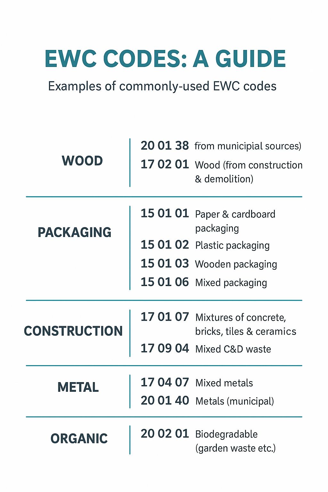
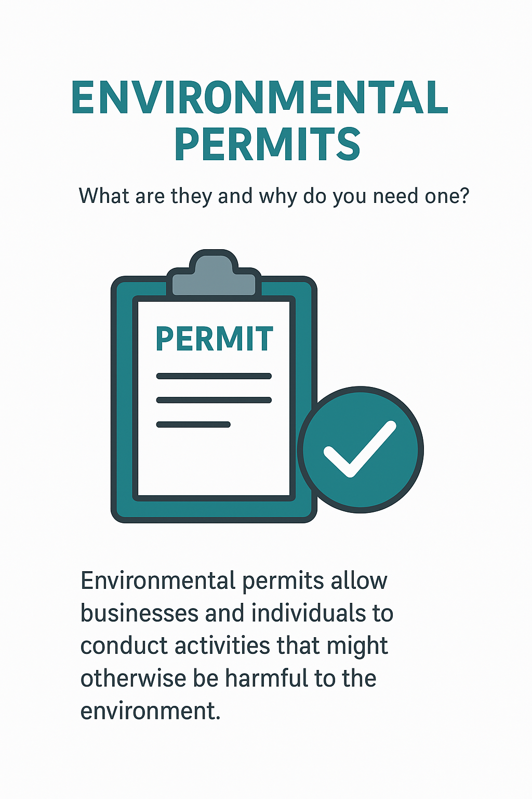
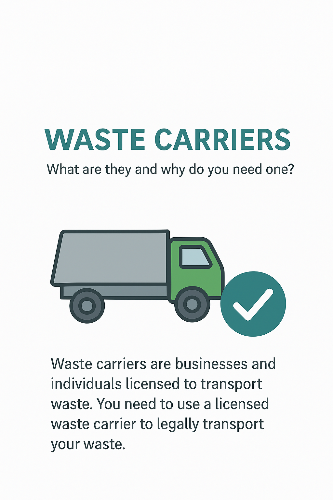

Understanding EWC Codes: A Complete Guide for UK Waste Producers

European Waste Catalogue (EWC) codes — sometimes called LoW (List of Waste) codes — are the foundation of waste classification in the UK.
Every business that produces waste must identify the correct code before the material can be stored, transported, or disposed of legally.
Incorrect coding can lead to rejected loads, enforcement action, financial penalties and, in some cases, prosecution.
Why EWC Codes Matter
EWC codes exist to ensure that waste streams are classified consistently across Europe and the UK. The six-digit code tells you:
What type of waste it is (e.g., construction, municipal, commercial).
Whether the waste is hazardous or non-hazardous.
What regulations apply, including Duty of Care and consignment requirements.
Which licensed sites can legally accept the waste.
Correct Example EWC Codes
17 02 01 — Wood from construction and demolition activities (non-hazardous).
20 03 01 — Mixed municipal waste, commonly produced by businesses and households.
16 01 03 — Used or end-of-life tyres (Chapter 16: wastes not otherwise specified).
How to Identify the Proper EWC Code
Follow the government’s recommended three-step process:
Identify the source activity. For example, construction, manufacturing, healthcare, ELV dismantling etc.
Check the chapter and sub-chapter descriptions.
Identify the correct six-digit code.
If the waste appears in more than one chapter, you must use the chapter relating to the original process that created it.
If you misclassify waste, the receiving site may reject the load or require a revised transfer note before tipping.
Environmental Permits: What They Are and Why They Matter for Businesses

Environmental permits exist to regulate activities that could pose a risk to human health or the environment.
They apply to waste sites, treatment activities, energy generation, industrial processes, discharges to water, and many other operations.
Whether you're buying land, operating a waste site, or establishing new infrastructure, understanding the requirements of environmental permitting is essential to avoid legal and financial pitfalls.
What an Environmental Permit Covers
Permits set conditions to ensure that environmental impacts are controlled and adequately monitored.
These conditions may include:
Limits on storage volumes or waste types.
Emission monitoring and controls.
Infrastructure and drainage requirements.
Record-keeping, reporting and inspection obligations.
Permits and Commercial Transactions
When buying or leasing a site, undisclosed or incorrectly transferred permits can create major issues.
Some businesses assume permits automatically transfer with a property — they do not.
The new operator must apply to transfer, vary, or surrender the permit.
During due diligence, always check:
Whether the permit is valid and active.
Whether the permit matches the activities taking place.
Compliance history, breaches, warnings or enforcement notices.
What Is a Waste Carrier, Broker or Dealer? A Practical UK Guide

Many businesses are surprised to learn that simply transporting waste — even their own — can require registration.
Others do not realise that arranging the transport of waste for someone else (even without physically handling it) may classify them as a waste broker.
Waste Carrier
You are a carrier if you transport waste as part of your business.
There are two tiers:
Upper Tier — For most businesses transporting for others.
Lower Tier — For organisations transporting their own non-hazardous waste.
Waste Broker
A broker organises the movement of waste without physically transporting it.
For example, logistics coordinators, facilities managers, or skip brokers.
Waste Dealer
Dealers buy or sell waste, or act as intermediaries in commercial waste transactions.
Why This Matters
Operating without the correct registration can result in:
How Do You Know If You Need an Environmental Permit?
Businesses often assume they don’t need a permit because their activity seems low-risk.
However, the threshold for requiring a permit is sometimes much lower than expected.
Failure to obtain one can lead to enforcement notices, stop-work orders and significant fines.
Common Activities That Require a Permit
Storing or treating waste above exemption thresholds
Operating machinery that emits dust, fumes or noise
Fuel storage or combustion equipment
Discharging to surface water or groundwater
Biological waste treatment
Understanding Exemptions vs Permits
Some operations can be carried out under an exemption (e.g., T5, S1, U1), but these often include strict volume limitations.
If you exceed them — even unintentionally — you are automatically operating illegally.
Understanding Your Waste Duty of Care Responsibilities
Under Section 34 of the Environmental Protection Act 1990, every business has a legal Duty of Care for the waste it produces.
This means ensuring it is stored, transported, and disposed of safely — and only via licensed carriers and permitted sites.
Main Duty of Care Requirements
Correct EWC classification
Secure on-site storage
Transfer only to registered carriers
Keep waste transfer notes for at least 2 years
Ensure receiving sites are properly permitted
Non-compliance can result in enforcement notices, penalties or being held liable for downstream fly-tipping if your waste ends up in the wrong hands.
The UK waste industry still suffers from fly-tipping and illegal waste movements.
Many of these incidents originate from unregistered carriers offering "cheap" disposal services.
Businesses who use them — even unknowingly — can be held partially liable.
Consequences of Using an Unlicensed Carrier
Prosecution under Duty of Care law
Fixed penalty notices
Costs for clean-up or remediation
Reputational damage
How to Stay Compliant
Check the carrier on the EA public register
Request a Waste Transfer Note for every collection
A Waste Transfer Note (WTN) is a legal document required whenever waste changes hands between
two parties—whether for collection, transport, or disposal. It forms the audit trail proving
that waste has been managed responsibly and in line with UK legislation under the Environmental
Protection Act 1990.
WTNs apply to most non-hazardous waste, and must be completed for every load unless a
“season ticket” arrangement is in place for repeat collections. The note records key details
such as:
Who produced the waste
Who collected the waste
The waste carrier registration number
The EWC code describing the waste type
The quantity and description of waste
The collection address
Where the waste will be taken for treatment
WTNs must be kept for a minimum of **two years** and must be available during inspections.
Electronic versions (including PDFs or platform-based records) are accepted by regulators.
Choosing a compliant waste contractor is essential to protecting your business from
legal risk, financial penalties, and environmental harm. Under UK Duty of Care laws,
you are responsible for ensuring your waste is handled by legitimate and licensed operators.
Before appointing a contractor, you should verify the following:
Waste Carrier Registration – Check the operator is registered as a carrier,
broker, or dealer. You can confirm this directly using the Environment Agency public register:
EA Waste Carrier Registration Search
Insurance – Ensure they have adequate public liability and pollution cover.
Disposal Routes – Confirm which sites they tip at and ensure those facilities
are fully permitted and suitable for the waste types collected.
Documentation – Ensure they provide compliant WTNs or Hazardous Waste Consignment Notes.
Vehicle Standards – Check that vehicles are roadworthy, maintained,
and suitable for the waste stream.
A non-compliant contractor exposes your business to prosecution. Always carry out checks,
keep records, and periodically re-verify licences as they can expire or be revoked.
A good contractor will be transparent, willing to provide evidence, and clear about how and
where the waste is processed. Avoid any company that cannot show documentation.
Before tipping any waste at a disposal or treatment facility, both waste producers and carriers
have a responsibility to ensure that the site is compliant, permitted, safe, and suitable for
the waste being deposited. This is a key part of the UK Duty of Care framework.
Key Checks You Must Carry Out
Check the site’s permit – Verify that the facility holds a valid
Environmental Permit covering the specific waste types (EWC codes) you are delivering.
You can search for permits using:
EA Environmental Permit Public Register
Check opening times and restrictions – Some sites restrict certain
waste types, vehicle sizes, or delivery windows.
Ensure the waste matches the description – Mixed or contaminated loads
may be rejected or incur surcharges.
Verify safety rules – Many sites require PPE, induction procedures, or
specific access routes.
Check pricing and acceptance criteria – Some sites require pre-approval
or booking confirmations.
Confirm duty of care documents – Ensure your WTN or consignment note
is completed and accurate prior to arrival.
A quick verification can prevent rejected loads, delays, or non-compliance issues.
Never tip at a site if you are unsure about its legal status or suitability.